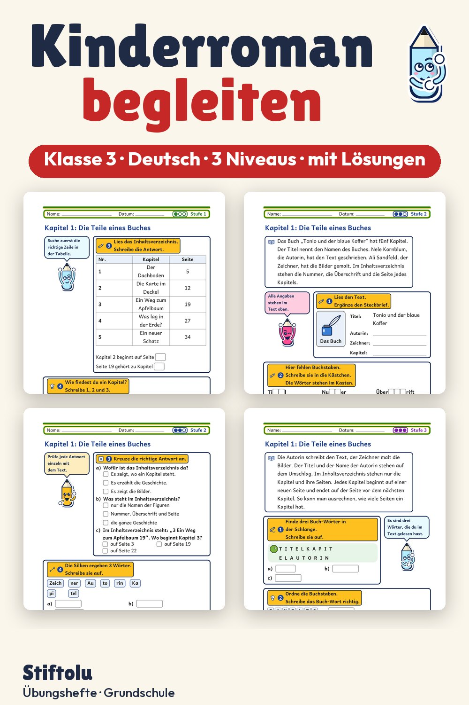

Werbung · Übungsheft von Stiftolu
Kinderroman begleiten in Klasse 3: Kapitel zusammenfassen, Lese-Logbuch führen

Titel, Autorin, Zeichner, Inhaltsverzeichnis: Zuerst lernen Drittklässler die Teile eines Buches kennen. Danach wird ein erfundener Buchauszug in Stichwörtern zusammengefasst, und die Wünsche der Figuren werden geklärt. Im Lese-Logbuch halten die Kinder fest, was passiert und was sie vermuten. Gebündelt sind es 48 Seiten mit 3 Niveaus und Lösungen, erhältlich auf eduki.